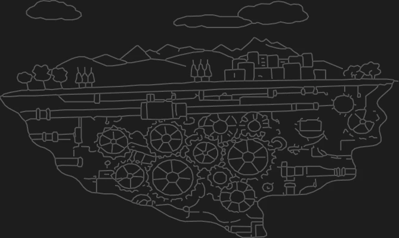
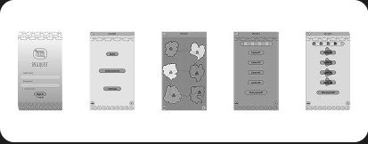
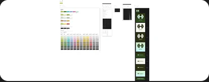
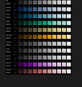

Projects
Selected projects showing UX research, product thinking, learning design and real-world delivery.

AI Educator CPD: practical digital learning experience for teachers
AI Educator CPD: practical digital learning experience for teachers
View project
Talking About Online Life: micro-learning for online safety CPD
Talking About Online Life: micro-learning for online safety CPD
View project
Salient Bio: Making microbiome testing easier to understand
Salient Bio: Making microbiome testing easier to understand
View projectProjects in progress
Experiments and work in progress.
In progress · Educational app

SpellQuest App
SpellQuest App
View project detailsIn progress · UX project
Dovetail Orchestra Website
Dovetail Orchestra Website
View project detailsIn progress · Design system

HabitHero Component System
HabitHero Component System
View project detailsIn progress · Website UX
